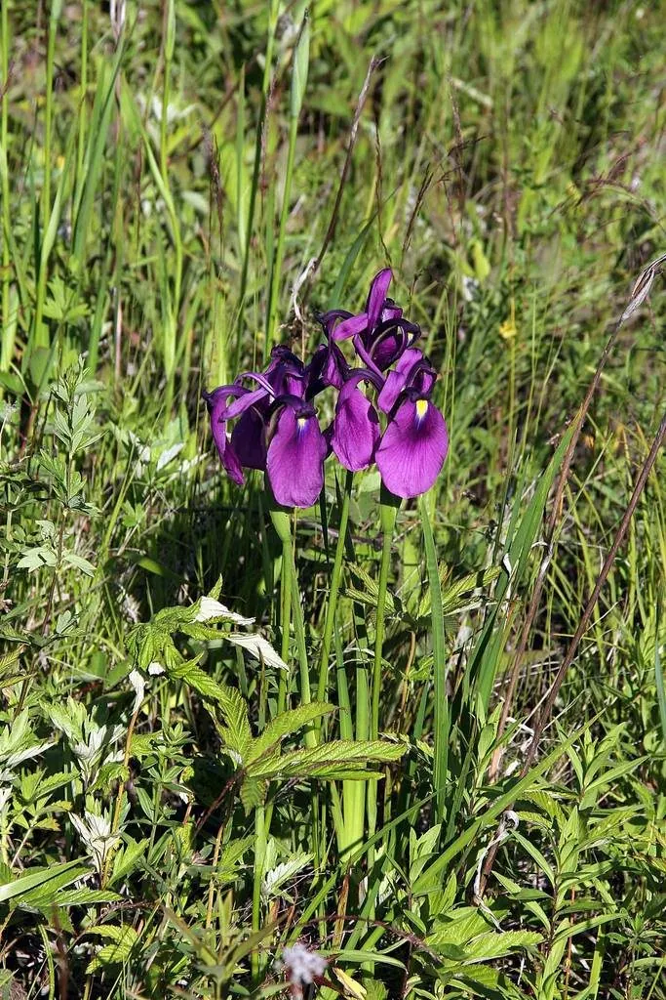

水生植物 · 植物界
花菖蒲 Iris ensata

鸢尾科多年生湿生草本，花大而平展、花色丰富，是日本花菖蒲园艺的代表，原产东亚湿地，中国东北、日本有分布。
- 分类
- 门被子植物门纲木兰纲目天门冬目科鸢尾科属鸢尾属
- 栖息环境
- 水边湿地与湿草甸，喜光、喜湿、耐寒
- 地理分布
- 原产中国东北、日本与朝鲜半岛，中国北方湿地有分布
- 保护级别
- 暂无评估
物种志
花菖蒲为鸢尾科鸢尾属多年生湿生草本，株高 0.6–1.2 米，根状茎粗壮。叶片剑形，长 40–80 厘米，中脉明显。花葶直立，花大，直径 10–15 厘米，平展，有紫、蓝、粉、白及复色，花期 5–6 月；果实为蒴果。
花菖蒲原产中国东北、日本和朝鲜半岛的湿地，喜阳光充足、湿润的环境，常生于水边和湿草甸。日本自江户时代起对其进行长期选育，形成了数千个园艺品种，统称“花菖蒲”，是日本传统园艺的代表之一。花菖蒲花色丰富、花形平展，适合布置水景园和湿生花境；栽培需保持土壤湿润，以分株繁殖为主，每 3–4 年分栽一次可保持花量。
形态与习性
- 株高0.6–1.2 米，叶片剑形
- 花期5–6 月，花大而平展
- 果期花后结蒴果
- 光照喜充足阳光
- 水分湿地或浅水，土壤需保持湿润
- 土壤肥沃、保水性好的壤土
- 繁殖根状茎分株繁殖
- 主要用途水景园、湿生花境、切花
趣味知识
- 花菖蒲原产东亚湿地，日本自江户时代起选育出数千个园艺品种。
- 它的花大而平展，直径可达 10–15 厘米，花色有紫、蓝、粉、白等。
- 花菖蒲喜湿，栽培时需要保持土壤湿润，不能长期干旱。
- 它与菖蒲并非同种，花菖蒲属于鸢尾属，菖蒲属于菖蒲科。